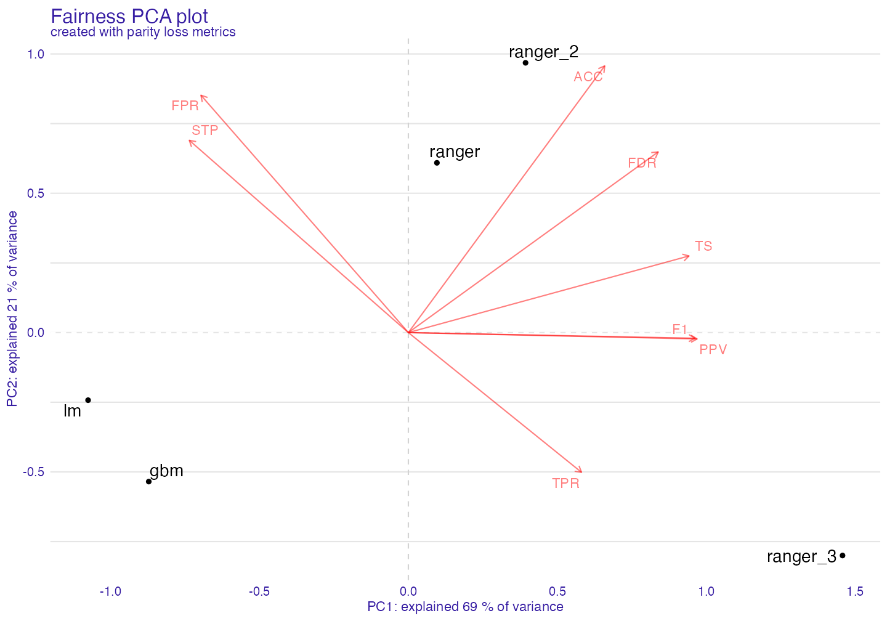

Basic Tutorial
Jakub Wiśniewski
Basic_tutorial.RmdObjects and Structure
For this tutorial we will use compas data to see if someone will become recidivist in next 2 years.
Why?
Let’s say you are building court system that predicts if someone will become recidivist in the futre. First you gather information then you build a model and predict outcomes. You get accuracy score of 90%. It is preety good, but it appears that the model is more likely to say that African Americans will become recidivists. Model was trained on data that was discriminating certain ethnic groups. So now we have some options. First one is to change the data, and the second one is to tune model, and check if it behaves as we would like it to be. We will choose the second option.
Data
We will use modified ProPublica’s compas data to represent our problem.
#> Two_yr_Recidivism Number_of_Priors Age_Above_FourtyFive Age_Below_TwentyFive
#> 4 0 -0.6843578 no no
#> 5 1 2.2668817 no no
#> 7 0 -0.6843578 no no
#> 11 0 -0.6843578 no no
#> 14 0 -0.6843578 no no
#> 24 0 -0.6843578 no no
#> Sex Misdemeanor Ethnicity
#> 4 Male yes Other
#> 5 Male no Caucasian
#> 7 Female yes Caucasian
#> 11 Male no African_American
#> 14 Male yes Hispanic
#> 24 Male yes OtherDemographic parity
As our protected group is Ethnicity, we can plot amount of observations in particular class. Perfect data should have same number of observations in both classes per subgroup. This is just indicator of possible problem.
demographic_parity(compas, outcome = "Two_yr_Recidivism", group = "Ethnicity" )

We train and explain our model with DALEX
# Train rf_compas <- ranger(Two_yr_Recidivism ~., data = compas, probability = TRUE) # numeric target values y_numeric <- as.numeric(compas$Two_yr_Recidivism)-1 # explainer rf_explainer <- DALEX::explain(rf_compas, data = compas[,-1], y = y_numeric)
#> Preparation of a new explainer is initiated
#> -> model label : ranger ( [33m default [39m )
#> -> data : 6172 rows 6 cols
#> -> target variable : 6172 values
#> -> model_info : package ranger , ver. 0.12.1 , task classification ( [33m default [39m )
#> -> predict function : yhat.ranger will be used ( [33m default [39m )
#> -> predicted values : numerical, min = 0.1362461 , mean = 0.4553638 , max = 0.8462502
#> -> residual function : difference between y and yhat ( [33m default [39m )
#> -> residuals : numerical, min = -0.7848522 , mean = -0.0002438754 , max = 0.8354579
#> [32m A new explainer has been created! [39mThan we create fairness_object with create_fairness_object()
fobject <- create_fairness_object(rf_explainer, data = compas, # it is important to specify all data if explainer doesn't have it outcome = "Two_yr_Recidivism", # target variable group = "Ethnicity", # protected group base = "Caucasian", # to what subgroup we want to compare cutoff = 0.5) # cutoff - optional, deafult = 0.5
And we plot!
plot(fobject)

As we can see it is more likely that model will categorise African Americans as future recidivists than for example Asians. But mabey some groups are statisticaly more likely to go do crimes in the future. It is possible, but there are more ways that the model can discriminate people.
Fairness Object
To really see what fairness_object is about, we need to make some more models and explainers.
set.seed(123) rf_compas_1 <- ranger(Two_yr_Recidivism ~Number_of_Priors+Age_Below_TwentyFive, data = compas, probability = TRUE) lr_compas_1 <- glm(Two_yr_Recidivism~., data=compas, family=binomial(link="logit")) rf_compas_2 <- ranger(Two_yr_Recidivism ~., data = compas, probability = TRUE) rf_compas_3 <- ranger(Two_yr_Recidivism ~ Age_Above_FourtyFive+Misdemeanor, data = compas, probability = TRUE) rf_compas_4 <- ranger(Two_yr_Recidivism ~., data = compas, probability = TRUE) df <- compas df$Two_yr_Recidivism <- as.numeric(compas$Two_yr_Recidivism)-1 gbm_compas_1<- gbm(Two_yr_Recidivism~., data = df) explainer_1 <- DALEX::explain(rf_compas_1, data = compas[,-1], y = y_numeric) explainer_2 <- DALEX::explain(lr_compas_1, data = compas[,-1], y = y_numeric) explainer_3 <- DALEX::explain(rf_compas_2, data = compas[,-1], y = y_numeric, label = "ranger_2") explainer_4 <- DALEX::explain(rf_compas_3, data = compas[,-1], y = y_numeric, label = "ranger_3") explainer_5 <- DALEX::explain(gbm_compas_1, data = compas[,-1], y = y_numeric) explainer_6 <- DALEX::explain(rf_compas_4, data = compas[,-1], y = y_numeric, label = "ranger_4")
Now we create one object with all explainers
fobject <- create_fairness_object(explainer_1,explainer_2,explainer_3,explainer_4,explainer_5,explainer_6, data = compas, outcome = "Two_yr_Recidivism", group = "Ethnicity", base = "Caucasian")
As we can see there is some parameters in fobject such as:
1. DALEX Explainer or list of explainers
2. data - if first explainer was not provided with whole data frame, we should do it here
3. outcome - target variable, what we want to predict
4. group - protected group/ sensitive variable which can be unfairly treated
5. base - to what subgroup we want to compare metric scores with. If not provided gets first subgroup in data.
What consists of fairness object?
print(fobject)
#> Fairness Matrics:
#> TPR_parity_loss TNR_parity_loss PPV_parity_loss NPV_parity_loss
#> 1 0.6824922 0.3146544 0.4689762 0.3560605
#> 2 1.1219620 0.4459198 0.8675808 0.1131800
#> 3 0.7965905 0.2939922 0.4106824 0.4028647
#> 4 0.3902308 0.3734750 0.3647346 0.4881695
#> 5 0.9992566 0.3577169 0.6136059 0.2666404
#> 6 0.6923179 0.3108980 0.3622364 0.3361933
#> FNR_parity_loss FPR_parity_loss FDR_parity_loss FOR_parity_loss
#> 1 0.6824922 0.3146544 0.4689762 0.3560605
#> 2 1.1219620 0.4459198 0.8675808 0.1131800
#> 3 0.7965905 0.2939922 0.4106824 0.4028647
#> 4 0.3902308 0.3734750 0.3647346 0.4881695
#> 5 0.9992566 0.3577169 0.6136059 0.2666404
#> 6 0.6923179 0.3108980 0.3622364 0.3361933
#> TS_parity_loss ACC_parity_loss F1_parity_loss MCC_parity_loss label
#> 1 0.6012242 0.2993959 0.5816743 0.5301407 ranger
#> 2 0.8554819 0.1353720 NA 0.6709033 lm
#> 3 0.6659075 0.3502469 0.6301738 0.7154872 ranger_2
#> 4 0.2905197 0.1960918 0.3303955 0.3505547 ranger_3
#> 5 0.7824425 0.2502543 0.8321117 0.7168035 gbm
#> 6 0.5702318 0.2825981 0.5378322 0.5012586 ranger_4
#> Models explained:
#> [1] "ranger"
#> [1] "lm"
#> [1] "ranger_2"
#> [1] "ranger_3"
#> [1] "gbm"
#> [1] "ranger_4"
#>
#> Data:
#> Two_yr_Recidivism Number_of_Priors Age_Above_FourtyFive Age_Below_TwentyFive
#> 4 0 -0.6843578 no no
#> 5 1 2.2668817 no no
#> Sex Misdemeanor Ethnicity probabilities
#> 4 Male yes Other 0.2187197
#> 5 Male no Caucasian 0.6805686Fairness object gets metrics based on confussion matrix and checks them over the groups.
# for the first model fobject$groups_data$ranger$TPR
#> Caucasian African_American Asian Hispanic
#> 0.4318735 0.6604455 0.3750000 0.4074074
#> Native_American Other
#> 0.8000000 0.4274194If we were going only to take score from certain metric (Let’s say fpr and 0.3) we wouldn’t know if it is good or bad. But we are aiming for equal treatment over all groups so if this metric score would be the same in all groups it would be very good. But the metrics wouldn’t be comparable between each others (fpr - 0.3 in all groups and acc_parity - 0.9 in all groups, both are good in terms of parity). That is wy we use base - to set benchmark. And for example Caucasian in fpr had score of 0.3 and African American 0.6. After setting base = Caucasian Caucasian would have score 1, and African American 2, because is two times higher score in fpr.
Note: When dealing with aggregating plots we use formula sum(abs(1-score)) to represent aggregated score in metrics. In short is how much it differs from ideal scores.
Choosing best model
We now have a few models in our fairness_object
Let’s see how they perform in diffrent metrics.
Stacked Barplot
sm <- stack_metrics(fobject) plot(sm)

At first we see that lm is the worst overall model. It does not give us information if plots are similar to each other. For now only plots basic metrics.

Plot fairness PCA
With this task we should use PCA. We call create_fairness_pca() to create fairness pca object.
fobject$metric_data
#> TPR_parity_loss TNR_parity_loss PPV_parity_loss NPV_parity_loss
#> 1 0.6824922 0.3146544 0.4689762 0.3560605
#> 2 1.1219620 0.4459198 0.8675808 0.1131800
#> 3 0.7965905 0.2939922 0.4106824 0.4028647
#> 4 0.3902308 0.3734750 0.3647346 0.4881695
#> 5 0.9992566 0.3577169 0.6136059 0.2666404
#> 6 0.6923179 0.3108980 0.3622364 0.3361933
#> FNR_parity_loss FPR_parity_loss FDR_parity_loss FOR_parity_loss
#> 1 0.6824922 0.3146544 0.4689762 0.3560605
#> 2 1.1219620 0.4459198 0.8675808 0.1131800
#> 3 0.7965905 0.2939922 0.4106824 0.4028647
#> 4 0.3902308 0.3734750 0.3647346 0.4881695
#> 5 0.9992566 0.3577169 0.6136059 0.2666404
#> 6 0.6923179 0.3108980 0.3622364 0.3361933
#> TS_parity_loss ACC_parity_loss F1_parity_loss MCC_parity_loss label
#> 1 0.6012242 0.2993959 0.5816743 0.5301407 ranger
#> 2 0.8554819 0.1353720 NA 0.6709033 lm
#> 3 0.6659075 0.3502469 0.6301738 0.7154872 ranger_2
#> 4 0.2905197 0.1960918 0.3303955 0.3505547 ranger_3
#> 5 0.7824425 0.2502543 0.8321117 0.7168035 gbm
#> 6 0.5702318 0.2825981 0.5378322 0.5012586 ranger_4fair_pca <- fairness_pca(fobject) print(fair_pca)
#> Fairness PCA :
#> PC1 PC2 PC3 PC4 PC5 PC6
#> [1,] 0.8699102 0.4358304 -0.32389390 -0.307131257 0.021049055 -3.885781e-16
#> [2,] -3.6651504 -1.1443181 -0.04638564 -0.037861700 -0.035775185 -1.249001e-16
#> [3,] 0.6980253 1.8574416 0.42412877 -0.003547011 -0.047887023 -1.179612e-16
#> [4,] 2.4449832 -2.1157105 0.32196903 0.018850841 0.003644337 -3.053113e-16
#> [5,] -1.4701751 0.6873419 0.21202505 0.110026067 0.073711543 -4.232725e-16
#> [6,] 1.1224067 0.2794146 -0.58784331 0.219663061 -0.014742726 -2.706169e-16
#>
#> Created with:
#> [1] "ranger" "lm" "ranger_2" "ranger_3" "gbm" "ranger_4"
#>
#> First two components explained 98 % of variance.Let’s plot!
plot(fair_pca)

It is done with loadings plot, which can be customised.
plot(fair_pca, scale = 0) # deafult = 0.5

Plot Heatmap
Another way to deal with grouped data is using heatmap.
fheatmap <- fairness_heatmap(fobject) plot(fheatmap)

For both models and metrics dendograms are created. This way through hierarchical clustering we can look on similarities between models/metrics. It should give similar but more detailed information than PCA
It can be normalised among metrics.
fheatmap <- fairness_heatmap(fobject, scale = TRUE) plot(fheatmap, , title = "Title can be changed", subtitle = "subtitle too!") # we can turn values off via text= FALSE

Now we know what those scores are and how “similar” models are to each other
Metric and Performance Plot
Sometimes we would like to know how good are models in performance metrics and in fairness metrics at the same time, to see the tradeoff between them.
fap <- performance_and_fairness(fobject, fairness_metric = "FPR_parity_loss")
#> Performace metric is NULL, setting deafult ( auc )
#>
#> Creating object with:
#> Fairness metric FPR_parity_loss
#> Performance metric aucplot(fap)

We can add plots with help of patchwork
library(patchwork) library(ggplot2) p1 <- plot(performance_and_fairness(fobject, "TPR_parity_loss", "accuracy")) p2 <- plot(performance_and_fairness(fobject, "FPR_parity_loss", "auc")) + ggtitle(" ") + theme(legend.position = "none") p3 <- plot(performance_and_fairness(fobject, "NPV_parity_loss", "recall")) + ggtitle(" ") + theme(legend.position = "none") p4 <- plot(performance_and_fairness(fobject, "TS_parity_loss", "f1"))+ ggtitle(" ") + theme(legend.position = "none")
(p1 + p2)/(p3+p4)

Back to detail
When we have narrowed down our search for the best model we can use two_models_plot to check once again metrics within groups and decide which model to use.
fobject2 <- create_fairness_object(explainer_1,explainer_3, data = compas, outcome = "Two_yr_Recidivism", group = "Ethnicity", base = "Caucasian") gm <- group_metric(fobject2, fairness_metric = "FPR")
#> Performace metric not given, setting deafult ( auc )
#>
#> Creating object with:
#> Fairness metric FPR
#> Performance metric aucplot(gm)

Radar plot
fradar <- fairness_radar(fobject2) plot(fradar)

We can also use simple plot when we have only few explainers.
plot(fobject2)

Of course the protected group can be changed.
fobject3 <- create_fairness_object(explainer_2,explainer_5, data = compas, outcome = "Two_yr_Recidivism", group = "Sex", base = "Female") plot(fobject3)

Custom cutoff
In fairmodels we can specify cutoff (threshold) for each subgroup, so if subgroups are:
levels(compas$Sex)
#> [1] "Male" "Female"fobject_without_cutoff <- create_fairness_object(explainer_2,explainer_5, explainer_4, data = compas, outcome = "Two_yr_Recidivism", group = "Sex", base = "Female") fobject_with_cutoff <- create_fairness_object(explainer_2,explainer_5, explainer_4, data = compas, outcome = "Two_yr_Recidivism", group = "Sex", base = "Female", cutoff = c(0.5,0.4)) p1 <- plot(performance_and_fairness(fobject_without_cutoff, fairness_metric = "TPR_parity_loss"))
#> Performace metric is NULL, setting deafult ( auc )
#>
#> Creating object with:
#> Fairness metric TPR_parity_loss
#> Performance metric aucp2 <- plot(performance_and_fairness(fobject_with_cutoff, fairness_metric = "TPR_parity_loss"))
#> Performace metric is NULL, setting deafult ( auc )
#>
#> Creating object with:
#> Fairness metric TPR_parity_loss
#> Performance metric aucp1 / p2

In term of TPR we achieved less parity loss with similar auc.